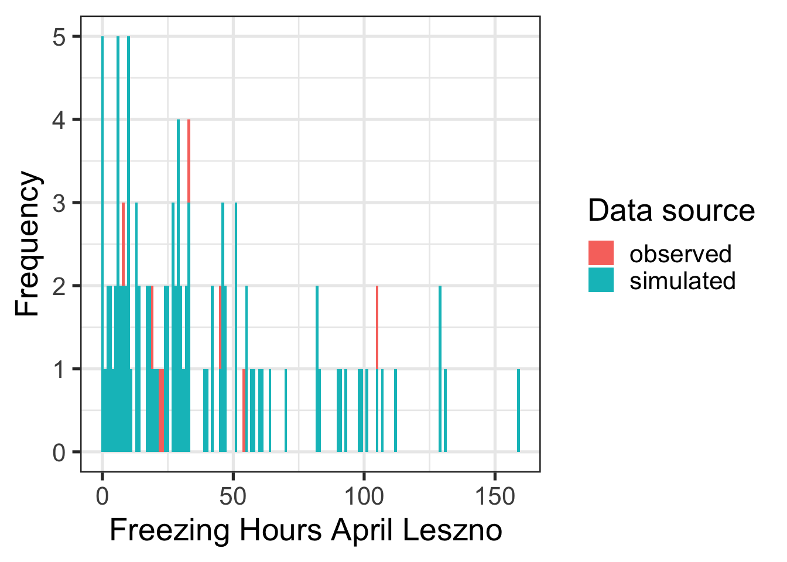

Chapter 10 Generating temperature scenarios
10.1 Task 1
For the location you chose for your earlier analyses, use chillR’s weather generator to produce 100 years of synthetic temperature data.
A weather generator can be used to generate synthetic weather data. Chill R uses the generator from the RMAWGEN package. In order to generate weather data, the weather generator needs to be calibrated using original data. In this example, the weather data set for the Leszno location, generated in previous chapters, is used for calibration.
Generating the weather data takes a little time. Therefore, as in previous chapters, the generated data is saved and then read in at this point.
# load completed temperature
#df_lz = read.csv("weather_data/Leszno_weather.csv", header = TRUE)
# use handle_gsod for preparation
#LZ_weather = handle_gsod(df_lz)
# run the temperature generator
#Temp<-temperature_generation(LZ_weather,
# years=c(1998,2005),
# sim_years = c(2001,2100))
# plot measured values and simulated values
# pull the data set from the list Temp
#Temp = Temp[[1]]
# why is there an additional column? -> remove the col nodata from data set!
#Temp = Temp[,-c(5)]
# create dataframe Temperatures with the temperature information from 1998 - 2005
#Temperatures<-cbind(LZ_weather[
# which(LZ_weather$Year %in% 1998:2005),] ,Data_source="observed")
# cause of using the handle_gsod() function there are the
# col´s prec and mean Temp which should deleted
#Temperatures = Temperatures[,-c(7,8)]
# create final data frame Temperatures
#Temperatures<-rbind(Temperatures,
# cbind(Temp[,c("DATE","Year","Month","Day","Tmin","Tmax")],
# Data_source="simulated"))
#Temperatures[,"Date"]<-as.Date(ISOdate(2000,
# Temperatures$Month,
# Temperatures$Day))
#write.csv(Temperatures, "weather_data/Lezno_sim_temperatures.csv")
Temperatur_s =
read.table("weather_data/Lezno_sim_temperatures.csv",
header = TRUE,
sep = ",")
Temperatur_s$Date = as.Date(ISOdate(2000,
Temperatur_s$Month,
Temperatur_s$Day))
# Plot results
ggplot(data = Temperatur_s, aes(Date, Tmin)) +
geom_smooth(aes(colour = factor(Year))) +
facet_wrap(vars(Data_source)) +
theme_bw(base_size = 20) +
theme(legend.position = "none") +
scale_x_date(date_labels = "%b")
ggplot(data = Temperatur_s, aes(Date, Tmax)) +
geom_smooth(aes(colour = factor(Year))) +
facet_wrap(vars(Data_source)) +
theme_bw(base_size = 20) +
theme(legend.position = "none") +
scale_x_date(date_labels = "%b")10.2 Task 2
Calculate winter chill (in Chill Portions) for your synthetic weather, and illustrate your results as histograms and cumulative distributions.
# calculate chill for observed
# chill_observed<-chilling(
# stack_hourly_temps(
# Temperatur_s[which(Temperatur_s$Data_source=="observed"),],
# latitude = 51.39), # change latitude
# Start_JDay = 305,
# End_JDay = 59)
#write.csv(chill_observed, "chill_observed.csv")
chill_observed = read.csv("chill_observed.csv")
# calculate chill for simulated
# chill_simulated<-chilling(
# stack_hourly_temps(
# Temperatur_s[which(Temperatur_s$Data_source=="simulated"),],
# latitude = 51.39), # change latitude
# Start_JDay = 305,
# End_JDay = 59)
#write.csv(chill_simulated, "chill_simulated.csv")
chill_simulated = read.csv("chill_simulated.csv")
# build data frame
chill_comparison<-cbind(chill_observed ,Data_source="observed")
chill_comparison<-rbind(chill_comparison,
cbind(chill_simulated ,Data_source="simulated"))
chill_comparison_full_seasons<-chill_comparison[
which(chill_comparison$Perc_complete==100),]
# visualize
ggplot(chill_comparison_full_seasons, aes(x=Chill_portions)) +
geom_histogram(binwidth=1,aes(fill = factor(Data_source))) +
theme_bw(base_size = 20) +
labs(fill = "Data source") +
xlab("Chill accumulation (Chill Portions)") +
ylab("Frequency")
chill_simulations<-chill_comparison_full_seasons[
which(chill_comparison_full_seasons$Data_source=="simulated"),]
ggplot(chill_simulations, aes(x=Chill_portions)) +
stat_ecdf(geom = "step",lwd=1.5,col="blue") +
ylab("Cumulative probability") +
xlab("Chill accumulation (in Chill Portions)") +
theme_bw(base_size = 20)10.3 Task 3
Produce similar plots for the number of freezing hours (<0°C) in April (or October, if your site is in the Southern Hemisphere) for your location of interest.
# Observed frost hours
Leszno_observed_hourly_temp =
stack_hourly_temps(Temperatur_s[which
(Temperatur_s$Data_source =="observed"), ],
latitude = 51.39)
april_observes = Leszno_observed_hourly_temp[[1]]
april_observes = april_observes[which(april_observes$Month == 4),]
# data preparation
april_observes = data.frame(Date = april_observes$DATE,
case = april_observes$Data_source,
Temp = april_observes$Temp)
april_observes$date_new = as.POSIXct(april_observes$Date)
# write function to count frost hours
FH<-function(hourtemps)
{
hourtemps[,"frost_hours"]<-hourtemps$Temp<0.00
return(hourtemps)
}
# apply FH function
april_observes_frost = FH(april_observes)
april_observes_frost$date_new_new = as.Date(april_observes_frost$date_new, format="%d.%m.%Y")
#groupe
april_observes_frost_cum = group_by(april_observes_frost, Year =year(date_new_new))%>%
summarise(Frost_hours_april =sum(frost_hours))
april_observes_frost_cum[,"case"] = rep("observed", length(april_observes_frost_cum$Year))
# Simulated Procedure
Leszno_sim_hourly_temp =
stack_hourly_temps(Temperatur_s[which
(Temperatur_s$Data_source =="simulated"), ],
latitude = 51.39)
april_sim = Leszno_sim_hourly_temp[[1]]
april_sim = april_sim[which(april_sim$Month == 4),]
april_sim = data.frame(Date = april_sim$DATE,
case = april_sim$Data_source,
Temp = april_sim$Temp)
april_sim_frost = FH(april_sim)
april_sim_frost$date_new = as.POSIXct(april_sim_frost$Date)
april_sim_frost$date_new_new = as.Date(april_sim_frost$date_new, format="%d.%m.%Y")
april_sim_frost_cum = group_by(april_sim_frost, Year =year(date_new_new))%>%
summarise(Frost_hours_april =sum(frost_hours))
april_sim_frost_cum[,"case"] = rep("simulated", length(april_sim_frost_cum$Year))
kable(head(april_observes_frost_cum),
caption="Observed Frost Hours at Lezno in April 1998 to 2005") %>%
kable_styling("striped", position = "left", font_size = 10)%>%
scroll_box(width = "100%")| Year | Frost_hours_april | case |
|---|---|---|
| 1998 | 22 | observed |
| 1999 | 8 | observed |
| 2000 | 23 | observed |
| 2001 | 33 | observed |
| 2002 | 54 | observed |
| 2003 | 105 | observed |
kable(head(april_sim_frost_cum),
caption="Simulated Frost Hours at Lezno in April 2001 to 2100") %>%
kable_styling("striped", position = "left", font_size = 10)%>%
scroll_box(width = "100%")| Year | Frost_hours_april | case |
|---|---|---|
| 2001 | 14 | simulated |
| 2002 | 107 | simulated |
| 2003 | 51 | simulated |
| 2004 | 46 | simulated |
| 2005 | 55 | simulated |
| 2006 | 24 | simulated |
# create plot
compairson = rbind(april_observes_frost_cum, april_sim_frost_cum)
ggplot(compairson, aes(x=Frost_hours_april)) +
geom_histogram(binwidth=1,aes(fill = factor(case))) +
theme_bw(base_size = 20) +
labs(fill = "Data source") +
xlab("Freezing Hours April Leszno ") +
ylab("Frequency")
frost_simulations<-compairson[
which(compairson$case=="simulated"),]
ggplot(frost_simulations, aes(x=Frost_hours_april)) +
stat_ecdf(geom = "step",lwd=1.5,col="blue") +
ylab("Cumulative probability") +
xlab("Freezing Hours April Leszno Simulated") +
theme_bw(base_size = 20)